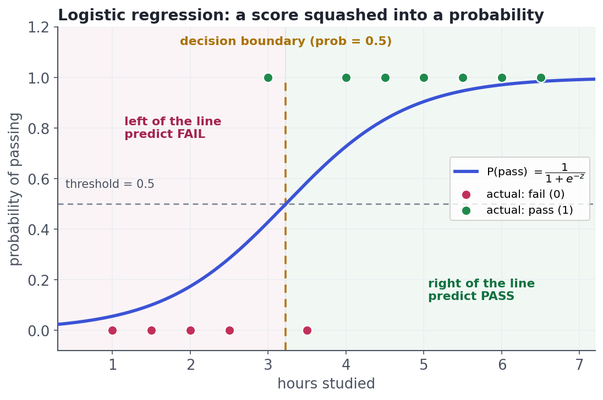

Classification & Logistic Regression
Predicting categories and probabilities.
Most real machine-learning questions aren't "how much?" — they're "which one?": will this customer churn or stay, is this transaction fraud or legit, will this email land as spam or not. That's classification, and logistic regression is its workhorse: simple, fast, shockingly hard to beat, and — unlike many models — it hands you an honest probability, not just a label. Master it and you own the default first model for every yes/no problem you'll ever face.
ConceptFrom a line to a probability
Linear regression outputs any number from −∞ to +∞, but a probability has to sit between 0 and 1. Logistic regression fixes that with one trick: it computes a linear score z = a + b·x (exactly like linear regression), then squashes it through the sigmoid function, which bends any number into the 0–1 range:
> P(y = 1) = 1 / (1 + e^(−z))
Big positive z → probability near 1; big negative z → near 0; z = 0 → exactly 0.5. The result is the smooth S-curve below — a probability of the positive class for every input:

ConceptReading the coefficients: odds and log-odds
Here's the subtle part interviewers probe. Logistic regression is linear — but linear in the log-odds, not the probability. The odds of an event are P / (1 − P) (a 0.8 probability is odds of 4-to-1); the log-odds are just their logarithm. The model says log-odds = a + b·x, so a coefficient b is the change in log-odds per one-unit increase in x. The friendly version: e^b is the odds ratio — how the odds get multiplied for each unit of x. A coefficient of 0.7 means e^0.7 ≈ 2, i.e. each extra unit roughly doubles the odds. That's why you can't read a logistic coefficient as "+0.7 probability"; its effect on probability is an S-curve, biggest in the middle and flat at the ends.
Concept · the leverThe decision threshold — where probability becomes a choice
A probability isn't a decision. To act, you pick a threshold: predict the positive class when P ≥ threshold, else negative. The default is 0.5, but it is a business choice, not a law. Lower it and you catch more true positives (higher recall) at the cost of more false alarms (lower precision); raise it and the opposite. For cancer screening you'd lower it (missing a case is terrible); for flagging accounts to ban you'd raise it (a false ban is costly). Drag the threshold and watch the tradeoff move — you can never max both at once:
Worked exampleFit one in scikit-learn
Same three-line shape as linear regression — but now .predict_proba gives you the probability, and .predict applies the 0.5 threshold for you:
import numpy as np
from sklearn.linear_model import LogisticRegression
hours = np.array([1,1.5,2,2.5,3,3.5,4,4.5,5,5.5,6,6.5]).reshape(-1, 1)
passed = np.array([0,0,0,0,1,0,1,1,1,1,1,1]) # 1 = passed, 0 = failed
clf = LogisticRegression().fit(hours, passed)
print(f"coefficient (per hour): {clf.coef_[0][0]:.3f} -> odds x{np.exp(clf.coef_[0][0]):.2f} per hour")
print(f"P(pass | studied 3h): {clf.predict_proba([[3]])[0][1]:.2f}")
print(f"P(pass | studied 5h): {clf.predict_proba([[5]])[0][1]:.2f}")
print(f"predicted class @ 5h: {clf.predict([[5]])[0]} (1 = pass)")
print(f"accuracy on training data: {clf.score(hours, passed):.2f}")coefficient (per hour): 1.269 -> odds x3.56 per hour P(pass | studied 3h): 0.43 P(pass | studied 5h): 0.90 predicted class @ 5h: 1 (1 = pass) accuracy on training data: 0.83
Read it back: each extra hour multiplies the odds of passing by about 3×; three hours of study gives a low pass probability, five hours a high one; and the model gets most of the training cases right. The probabilities are the real value here — a label throws away how sure the model is.
Interactive labYour turn — predict a probability
hours and passed are loaded and LogisticRegression is imported. Fit a model, then assign to answer the model's probability of passing after 4 hours of study, rounded to 2 decimals. (It's the positive class's probability — index [1].)
hours (2-D), passed (0/1); LogisticRegression imported. First Run loads scikit-learn.LogisticRegression().fit(hours, passed), then clf.predict_proba([[4]])[0][1] is P(pass); wrap in round(float(...), 2).clf = LogisticRegression().fit(hours, passed)
answer = round(float(clf.predict_proba([[4]])[0][1]), 2)predict_proba returns [P(fail), P(pass)]; index [1] is the pass probability the sigmoid produces at x = 4.
★ Key points to remember
- Classification predicts a category; logistic regression is the default first model, and it outputs a probability, not just a label.
- It computes a linear score
z = a + b·x, then the sigmoid1/(1+e^(−z))squashes it into 0–1. - It's linear in the log-odds: a coefficient
bmeans the odds get multiplied bye^bper unit ofx(the odds ratio) — not a fixed change in probability. - A threshold turns the probability into a decision. 0.5 is the default, but lowering/raising it trades recall against precision — a business choice.
- In code:
LogisticRegression().fit(X, y), then.predict_proba(...)for probabilities and.predict(...)for labels.
◆ Practice▸
Show solution & reasoning
0.62 means the model estimates a 62% chance this customer churns. Because calls are limited and false alarms costly, you'd likely raise the threshold above 0.5 (say 0.7) so you only call the customers the model is most confident about — trading some recall (you'll miss a few churners) for higher precision (the calls you do make are better spent). The right threshold comes from the cost of a wasted call vs. a lost customer, not from a default.
Show solution & reasoning
+1.1: each unit multiplies the odds by e^1.1 ≈ 3.0 — strongly increases the odds of the positive class. −0.4: each unit multiplies the odds by e^(-0.4) ≈ 0.67 — decreases the odds (to about two-thirds). Positive coefficients push toward the positive class, negative ones away; the magnitude (via e^b) says how strongly.
◎ Deep dive: maximum likelihood & log-loss, why accuracy misleads, and multiclass▸
How it's actually fit: maximum likelihood, not least squares. Linear regression minimises squared error; logistic regression can't (the sigmoid makes that non-convex and wrong-headed for probabilities). Instead it maximises the likelihood of the observed labels — equivalently, it minimises log-loss (cross-entropy), which punishes confident wrong predictions harshly (predicting 0.99 for something that was actually 0 costs a lot). There's no neat closed-form solution, so it's solved by iterative optimisation — but scikit-learn hides all of that behind .fit.
Accuracy lies on imbalanced data. If 99% of transactions are legit, a model that predicts "legit" every time is 99% accurate and completely useless — it never catches fraud. This is why classification is judged with precision, recall, F1, and ROC-AUC rather than raw accuracy, and why the threshold matters so much. That whole toolkit is Track 10 (Model Evaluation); logistic regression is where the need for it first bites.
Beyond two classes, and staying honest. For more than two categories, the same idea extends via softmax (multinomial logistic regression), giving a probability to each class that sums to 1. And like linear regression, logistic regression is regularized by default in scikit-learn (the C parameter controls the strength) to stop coefficients blowing up when features are many or correlated — the bias–variance tradeoff again. Its enduring appeal is interpretability: every coefficient is an odds ratio you can explain and defend, which is why regulated industries (credit, insurance) still reach for it first.
Nail three things: why not linear regression (a probability must be bounded 0–1 — the sigmoid does that); what a coefficient means (change in log-odds; e^b is the odds ratio, not a probability change); and the threshold tradeoff (lower → more recall, less precision). Bonus depth: it's fit by maximising likelihood / minimising log-loss, and accuracy is the wrong metric on imbalanced classes.